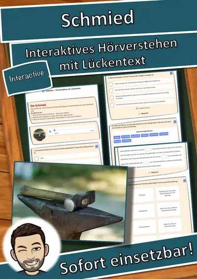

Sichere Passwörter – mein digitaler Schlüssel – Lesespurgeschichte mit Rätselaufgaben (Klasse 3)
Sichere Passwörter – mein digitaler Schlüssel – Lesespurgeschichte Informatik (Klasse 3/4)Schick deine Klasse auf eine Lesespur über eine Burg! Ronja und Levin aus der 3c besuchen das Medien-Burgfest auf Burg Eulenstein. Der Medienpädagoge Herr Kowalski zeigt ihnen, wie man seine digitalen Schätze schützt: Am Burgtor erfahren sie, dass man früher nur mit der richtigen Parole in die Burg kam – heute heißt so ein geheimes Wort Passwort. In der Schatzkammer sehen sie, was ein Passwort alles schützt, in der Schmiede „schmieden“ sie starke Passwörter, und in der Schreibstube lernen sie die Merksatz-Methode kennen. Am Würfeltisch entdecken sie, warum ein Computer kurze Passwörter schnell errät, im Taubenschlag, dass man sein Passwort niemals verrät, und in der Schlüsselkammer, dass jedes Konto ein eigenes Passwort braucht. Ronjas Stoff-Schildkröte Panzi ist immer dabei. Am Ende jedes Abschnitts verrät ein Hinweis den nächsten Ort auf dem Plan – nur wer genau liest, findet den Weg und sammelt alle geheimen Buchstaben zum Lösungswort.
Die perfekte Lesespur für INFORMATIK und Medienbildung in der 3. und 4. Klasse – ideal für den Medienführerschein, Projekttage, Vertretungsstunden und fächerübergreifend mit Deutsch, HSU und Mathematik: Sie verbindet sinnentnehmendes Lesen mit den wichtigsten Regeln für sichere Passwörter und kleinen Sachrechnungen. Das Material ist SOFORT EINSETZBAR, funktioniert ganz ohne Computer und ist in DREI DIFFERENZIERUNGSSTUFEN (leicht ★ / mittel ★★ / schwer ★★★) angelegt.WICHTIG: Das komplette Material ist sowohl in FARBE als auch in SCHWARZ-WEISS enthalten – ideal zum Sparen von Druckkosten.DAS IST ENTHALTEN
- Lesespurgeschichte in 3 Niveaus (leicht, mittel, schwer)
- farbiger Plan der Burg als Suchkarte
- Hörverstehen mit QR-Code zur MP3 (selbstständiges Hören mit Kopfhörern)
- vier Aufträge auf dem Weg: eine Zuordnung, ein Quiz, eine Rechenaufgabe und ein Steckbrief
- Rätselseite (Wörter-Suchsel + Fragen zu sicheren Passwörtern)
- Ausmalbild zum Thema (Burg mit Schatztruhe, Schlüssel und Schildkröte)
- ausführliches Lösungsblatt für die Lehrkraft
- alles zusätzlich als komplette Schwarz-Weiß-VarianteSO GEHT DIE LESESPURDie Kinder lesen ab START, finden im Text den nächsten Ort, suchen ihn auf dem Plan und lesen bei dieser Station weiter. An jeder richtigen Station gibt es einen Buchstaben. Eingeplante Sackgassen (Ziehbrunnen, Strohballen, Holzfass, Ritterrüstung) sind keine Stationen und dienen der Selbstkontrolle. Am Ende werden die gesammelten Buchstaben umgestellt und ergeben ein geheimes Lösungswort. (Die Lösungen sind selbstverständlich nur im Lösungsblatt für die Lehrkraft enthalten.)INHALTLICHER SCHWERPUNKTPasswort und Benutzername, digitale Daten schützen, Merkmale starker Passwörter (lang, Groß- und Kleinbuchstaben, Zahlen, Sonderzeichen), Merksatz-Methode, Erraten durch Ausprobieren, Passwort niemals weitergeben, Trickfragen im Chat erkennen, für jedes Konto ein eigenes Passwort, abmelden und Bildschirm sperren.ABGEDECKTER LEHRPLAN (Klasse 3/4, Informatik / Medienbildung)
- Heimat- und Sachunterricht (LehrplanPLUS Bayern) – Jahrgangsstufe 3/4: Leben in einer Medien- und Konsumgesellschaft – sicher mit digitalen Medien umgehen und persönliche Daten schützen.
- Mathematik – Jahrgangsstufe 3/4: Einmaleins, Subtrahieren und Addieren im Sachzusammenhang.
- Deutsch – Lesen: Sachtexte sinnentnehmend lesen; Zuhören: einem Hörtext folgen (Hörverstehen mit MP3).
- Informatische Grundbildung / Medienkompetenz: Datensicherheit und verantwortungsvoller Umgang mit Zugangsdaten.
Geeignet für Freiarbeit, Stationenlernen, Vertretungsstunden, Wochenplan, Projekttage und als Baustein für den Medienführerschein. Klassenstufe 3/4.
Ähnliche Materialien

Verantwortung in der digitalen Welt – Lesespurgeschichte mit Rätselaufgaben (Klasse 8)

Der Hackathon – im Team eine digitale Idee entwickeln – Lesespurgeschichte mit Rätselaufgaben (Klasse 10)

Digitale Spuren – Cookies, Tracking und Profile – Lesespurgeschichte mit Rätselaufgaben (Klasse 8)

Digitale Kunst – vom Pixel zur Projektion – Lesespurgeschichte mit Rätselaufgaben (Klasse 10)

Geheimschrift Lückentext mit Wortspeicher Hörverstehen und Suchsel

Die Schmiede – Lesespurgeschichte mit Rätselaufgaben (Klasse 4)

Schmied – Hörverstehen mit Lückentext (interaktiv)